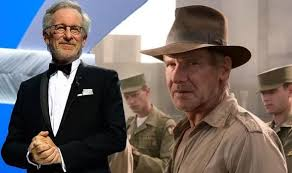
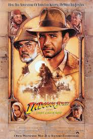

Indiana Jones is a fictional character created by George Lucas and portrayed by Harrison Ford in the iconic film series. The character first appeared in Raiders of the Lost Ark in 1981, directed by Steven Spielberg and produced by Lucas. Indiana Jones, or "Indy," is an adventurous archaeologist who often embarks on dangerous quests to retrieve valuable historical artifacts while battling Nazis, rival archaeologists, and supernatural forces. Indiana Jones is a combination of a classic hero and a flawed, relatable character. Hes intelligent, resourceful, and brave, but also humorous and sometimes prone to mistakes or misfortune. His signature appearance includes a fedora, leather jacket, and a bullwhip, which became cultural symbols of his character.
 The first film, Raiders of the Lost Ark, was a critical and commercial success, leading to the creation of sequels: Indiana Jones and the Temple of Doom (1984), Indiana Jones and the Last Crusade (1989), and Indiana Jones and the Kingdom of the Crystal Skull (2008). A fifth installment is also planned. Spielberg's direction and the characters blend of action, adventure, and humor made Indiana Jones one of the most beloved and enduring film franchises in cinema history.